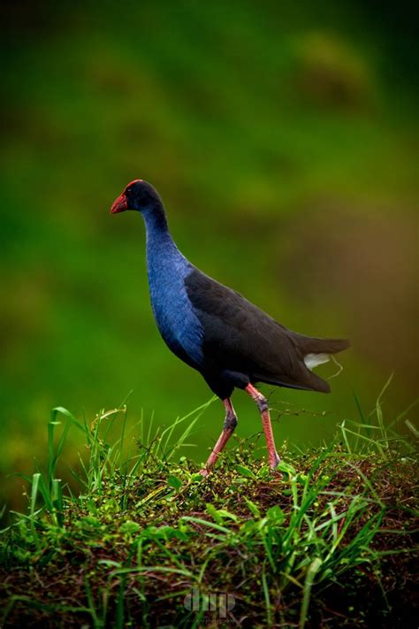

Pukekos are large, beautiful birds native to New Zealand, often called swamphens. They are recognizable for their blue-purple feathers, black back and wings, white under tail feathers, and bright red bill and legs. They are fond of wetland areas and can be found in both cities and rural areas.
